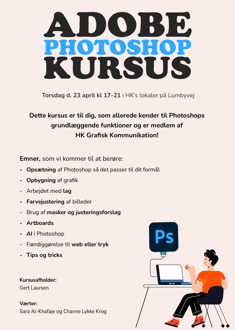

Baggrund
Som studenterrepræsentant for HK på UCL er jeg med til at planlægge og afholde kurser, workshops og events målrettet multimediedesignerstuderende på tværs af semestre.
I forbindelse med vores første Photoshop-kursus havde jeg det fulde ansvar for at udvikle den visuelle kommunikation, herunder en plakat, der skulle skabe opmærksomhed og tiltrække deltagere.

Udfordring
Plakaten skulle:
- Fange opmærksomhed hurtigt
- Kommunikere klart, hvad kurset indeholder
- Henvende sig til en bred målgruppe med varierende niveau
- Motivere brugeren til at handle og tilmelde sig
Samtidig skulle designet være let at afkode og fungere både digitalt og i print.
Løsning
Jeg designede en enkel og visuel plakat med fokus på tydelig hierarki, læsbarhed og konvertering.
Designet arbejder med:
- En stærk og genkendelig overskrift
- Begrænset farvepalette for visuel ro
- Klart informationshierarki (hvad, hvornår, hvor)
- Punktopstilling for hurtigt overblik over indhold
Det visuelle udtryk er bevidst simpelt for at sikre, at budskabet hurtigt kan aflæses uden unødig støj.
Resultat
Plakaten blev anvendt til promovering af kurset og fungerede som primær visuel indgang til eventet, med fokus på at øge tilmeldinger gennem klar og effektiv kommunikation.
Projektet er et konkret eksempel på, hvordan jeg arbejder med visuel kommunikation i praksis
• med fokus på at omsætte behov til en løsning, der både er æstetisk og funktionel.